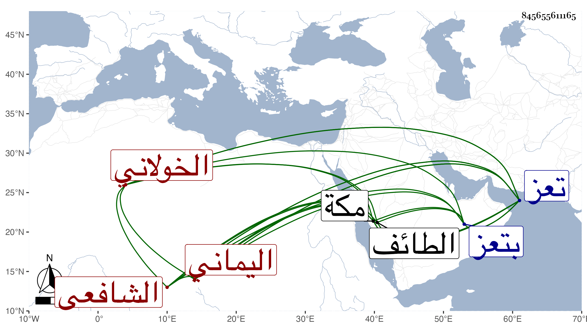

0902Sakhawi.DawLamic.ITO20230111-ara1.EIS1600.845655611165
Biography ID: 845655611165
360
عبد الولي بن محمد بن عبد الله بن حسن بن صلح ولي الدين الخولاني الوحصي اليماني الشافعي . ولد بقرين من الوحص ولازم بتعز الرضي بن الخياط والجمال محمد بن عمر العوادي وأحمد بن عبد الله الحرازي ووجيه الدين عبد الرحمن ابن أبي بكر الزوقري وقرأ عليهم الفقه وكذا لازم المجد الشيرازي في النحو وجاور معه بمكة وبالطائف ومهر حتى صار مفتي تعز مع ابن الخياط . ومات بالطاعون سنة تسع وثلاثين ذكره شيخنا في إبنائه وبيض له التقي بن فهد في معجمه وقال العفيف أحد المفتين في تعز وأبرك المدرسين فيها تفقه به جماعة وتفرغ للتدريس بالمؤيدية نيابة عن الموفق الناشري وظهرت بركته على تلامذته .
